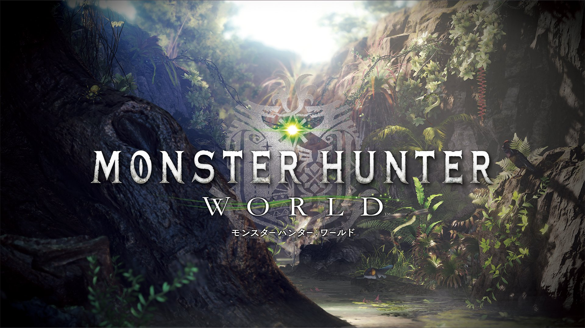
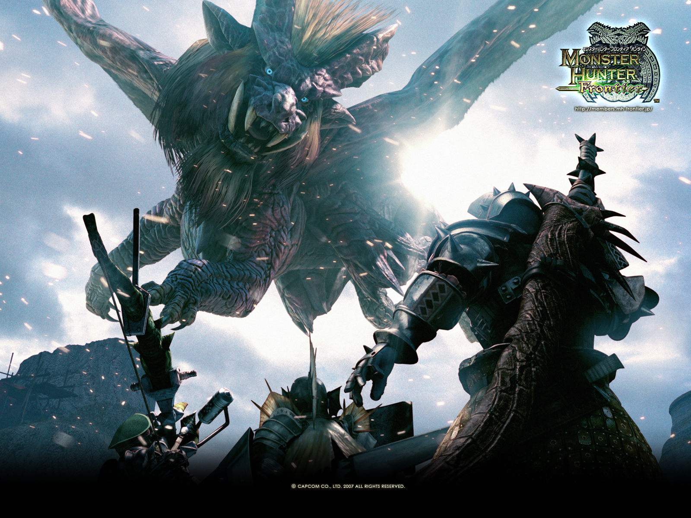

- 

- 


La franquicia Monster Hunter (モンスターハンター Monsutā Hantā?, lit. Cazador de monstruos) es una serie de videojuegos de rol de acción con temática fantástica que comenzó con el videojuego Monster Hunter para PlayStation 2, lanzado en 2004. Los títulos han sido publicados en una variedad de plataformas, que incluyen computadoras personales, consolas domésticas, consolas portátiles y dispositivos móviles. La serie es desarrollada y publicada por Capcom.
Los videojuegos son principalmente videojuegos de rol de acción. El jugador asume el papel de un cazador, que debe matar o atrapar monstruos grandes en varios entornos como parte de las misiones que les dan los locales. Como parte de su jugabilidad principal, los jugadores utilizan el botín obtenido al matar monstruos, reunir recursos y recompensas de misiones para crear armas, armaduras y otros objetos mejorados que les permitan enfrentarse a monstruos más poderosos. Todos los videojuegos de la serie principal cuentan con un modo multijugador (por lo general, hasta cuatro jugadores en partidas cooperativas), pero también se permite el modo de un solo jugador.
Al 31 de diciembre de 2018, la serie había vendido 53 millones de unidades en todo el mundo,2 principalmente en Japón y otros países asiáticos, donde ha proliferado debido a la popularidad de las características multijugador ad hoc de la serie en consolas portátiles. La franquicia Monster Hunter ha sido muy bien recibida en los mercados occidentales, pero en general ha languidecido en ventas, en parte debido a la alta y difícil curva de aprendizaje de los videojuegos. Sin embargo, con Monster Hunter: World (2018), Capcom se propuso atraer a una audiencia global utilizando el poder de las consolas domésticas y computadoras de gama alta, y lanzó el título simultáneamente en todo el mundo; Monster Hunter: World se convirtió en el videojuego más vendido de la franquicia a los 3 días de su lanzamiento y, en pocos meses, se convirtió en el videojuego más vendido de Capcom con más de 10 millones de unidades despachadas hasta agosto de 2018, con más del 70% de las ventas fuera de Japón.